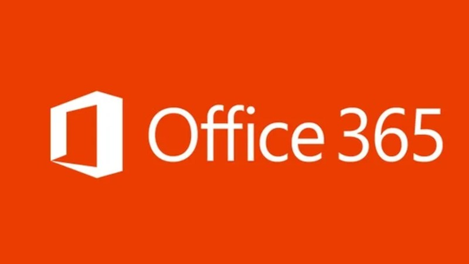
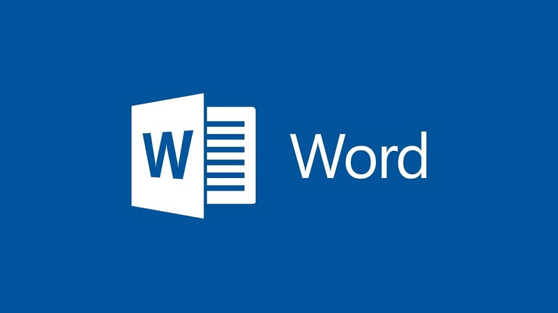
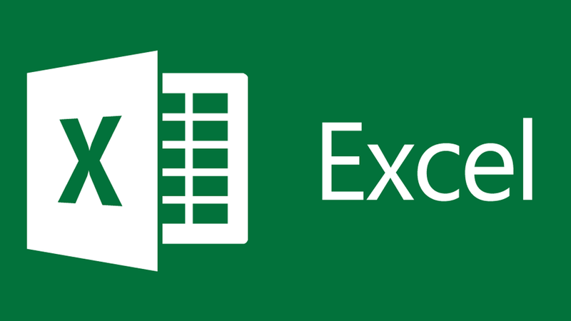
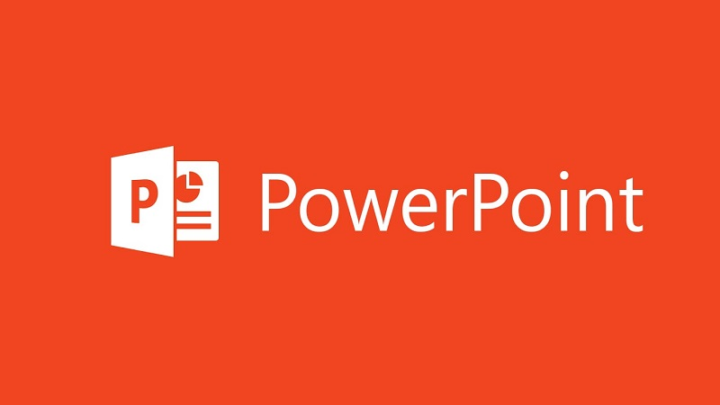
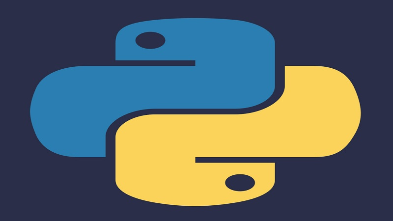

Visão Geral do Pacote Office
Iniciando o conteúdo sobre o pacote Office, pacote office, também conhecido como microsoft office, é um conjunto de aplicativos de software de produtividade desenvolvido pela microsoft. Este pacote é amplamente utilizado em escritórios, escolas, empresas e residências ao redor do mundo. Ele oferece uma série de ferramentas que ajudam a criar, editar e gerenciar documentos, planilhas, apresentações, e-mails e outras formas de comunicação e dados. Sendo muito usado em diferentes ramos de atuação e com toda certeza um requisito na nossa sociedade atual, e isso é algo que quero compartilhar. Além disso abordarei brevemente sobre uma das linguagens mais versáteis e mais utilizadas atualmente, a linguagem python. Abaixo, detalharemos cada um dos principais aplicativos que compõem o pacote office:
Microsoft Word
O microsoft word é um processador de texto robusto que permite criar, formatar e editar documentos. Ele é amplamente utilizado para a criação de textos simples, como cartas e relatórios, até documentos complexos, como teses e livros. O word oferece uma ampla gama de ferramentas de formatação, revisão ortográfica e gramatical, além de funcionalidades avançadas como a inserção de gráficos, tabelas, imagens e hyperlinks. Ele também permite a colaboração em tempo real, onde vários usuários podem trabalhar no mesmo documento simultaneamente.
Microsoft Excel
O microsoft excel é um programa de planilhas eletrônicas que permite a organização, análise e visualização de dados numéricos. Ele é extremamente popular para tarefas que envolvem cálculos financeiros, estatísticas e gráficos. O Excel possui funcionalidades avançadas, como tabelas dinâmicas, fórmulas complexas,gráficos variados e a capacidade de automatizar tarefas repetitivas através de macros. Suas capacidades de análise de dados o tornam uma ferramenta essencial para profissionais em finanças, contabilidade e análise de dados.
Microsoft Powerpoint
O microsoft powerpoint é uma ferramenta de criação de apresentações que permite aos usuários criar slides que podem incluir texto, imagens, gráficos, vídeos e animações. É amplamente utilizado em ambientes corporativos e educacionais para apresentações de negócios, treinamentos e palestras. O PowerPoint oferece uma variedade de temas e modelos que facilitam a criação de apresentações visuais impactantes. Ele também permite a criação de transições e animações para tornar as apresentações mais dinâmicas e envolventes.
Linguagem Python
Python é uma linguagem de alto nível utilizado nos mais diversos meios por conta de sua versatilidade, desde a programação de aplicações simples e repetitivas, como aprendizado de máquinas, é muito aplicado no desenvolvimento web em geral. Graças a sua comunidade ativa, o python continua em constante evolução, recebendo pacotes e atualizações, o que a torna uma das mais importantes da atualidade.
Códigos Python
O python possui diversas funções que podem ser implementadas de maneira simples, como a função 'print()', que é usada para exibir mensagens na tela.
Operações Matemáticas
Outro conjunto de funções são voltadas para a área matemática e envolvem equações básicas como adição, subtração, multiplicação e divisão, baseando se na matemática convencional, utilizam símbolos para suas representações: + para adição; - para subtração; * para multiplicação e / para divisão. Segue abaixo um projeto realizado utilizando a linguagem python.